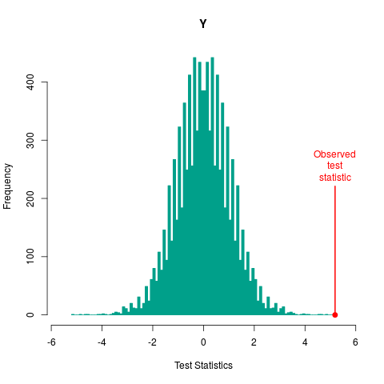
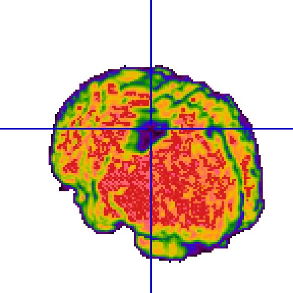

PAGINA IN COSTRUZIONE

|

|
Bachelor and Master thesis (in italian)
Branca Maria Maddalena (2014) Strategie di sentiment analysis: confronti e nuove proposte. LM
http://tesi.cab.unipd.it/46394/
Ferraccioli Federico (2014) Topic model workout: un approccio per l'analisi di microblogging, mass media e dintorni. LT
http://tesi.cab.unipd.it/45981/
Rinaldo Marco (2013) Un approccio bayesiano non parametrico per l’analisi automatica del testo. LM
Baldan Sara (2011) Analisi statistica di dichiarazioni politiche tramite correlated topic model. LT
http://tesi.cab.unipd.it/27993/
Rinaldo Marco (2010) Google insight for search e previsione della disoccupazione: applicazione ragionata al caso italiano. LT
http://tesi.cab.unipd.it/24858/
Gioachin Federico (2010) Indici di social network analysis per misurare il capitale sociale: costruzione di una libreria per software R e verifica d'ipotesi su un caso di studio. LT
http://tesi.cab.unipd.it/24503/